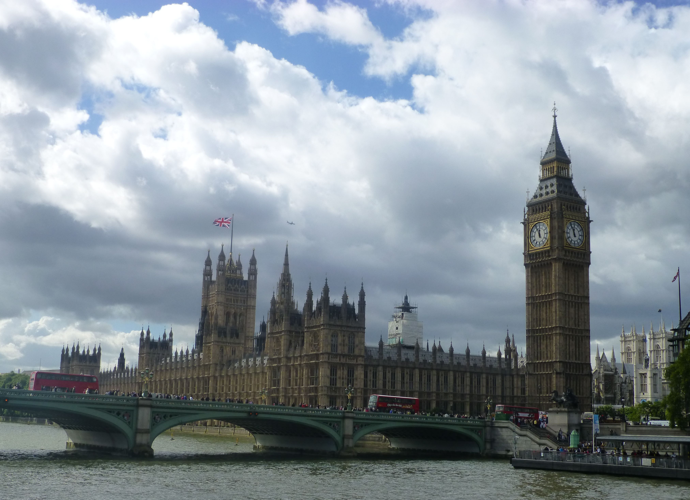
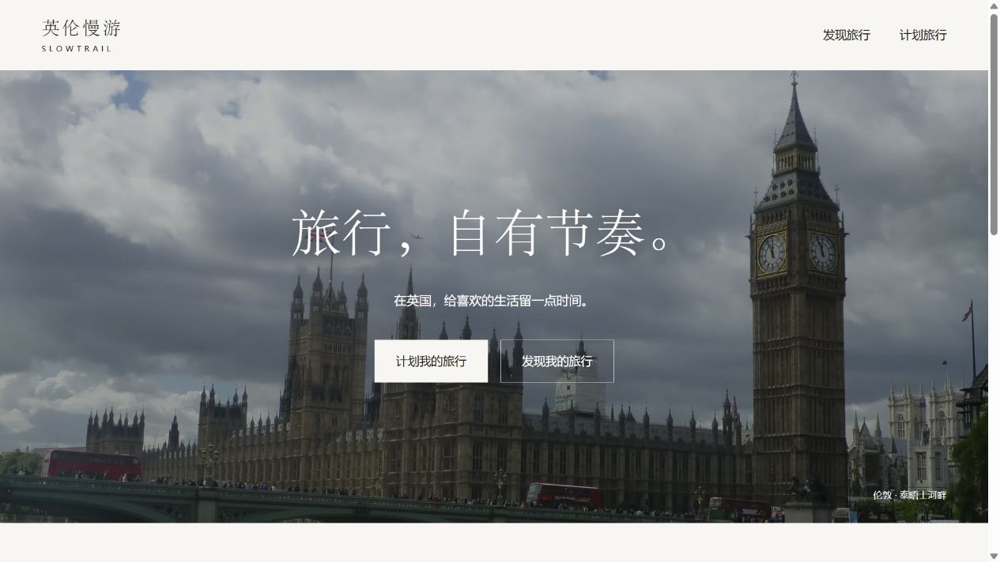
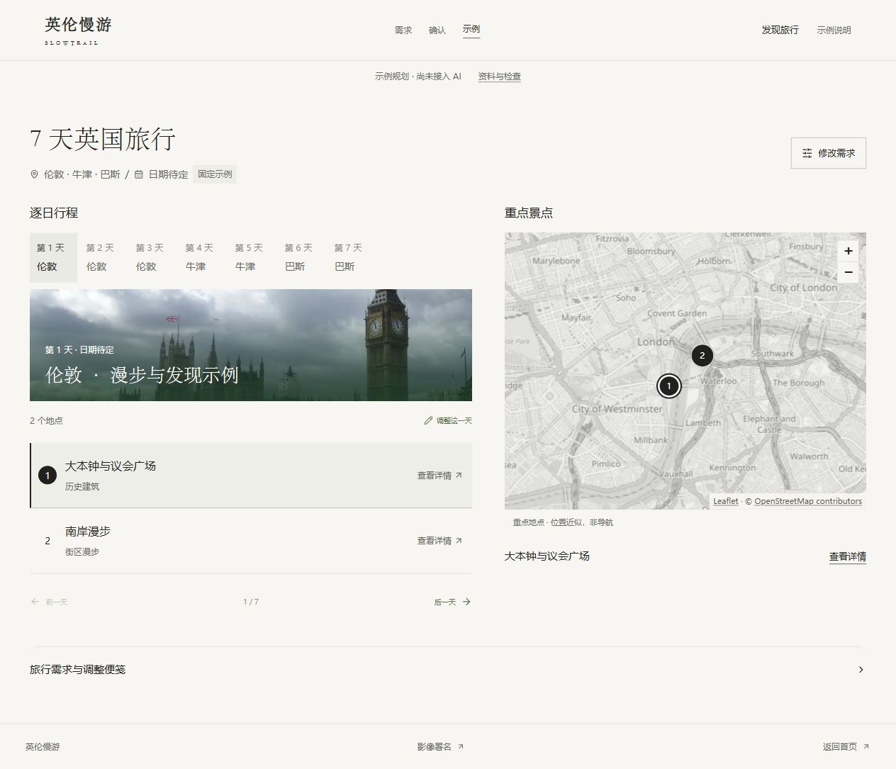
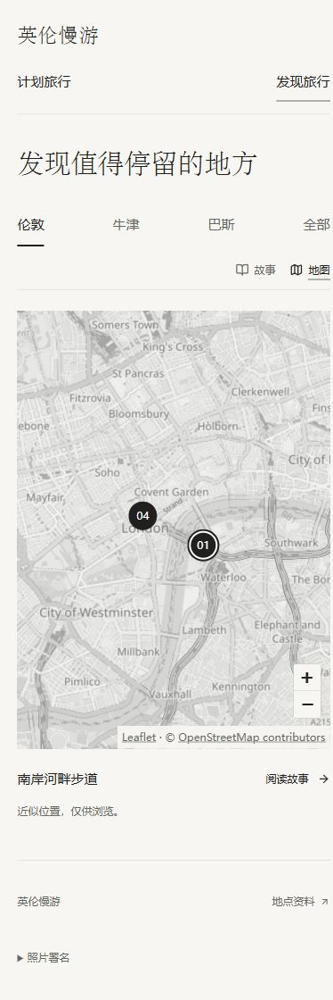
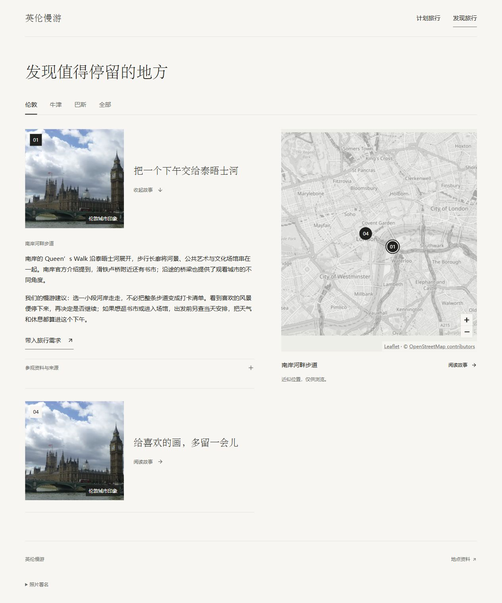
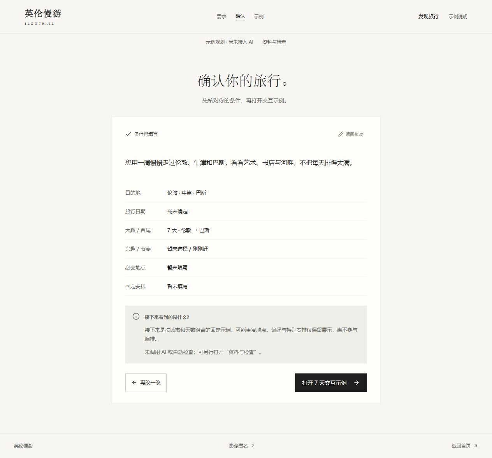
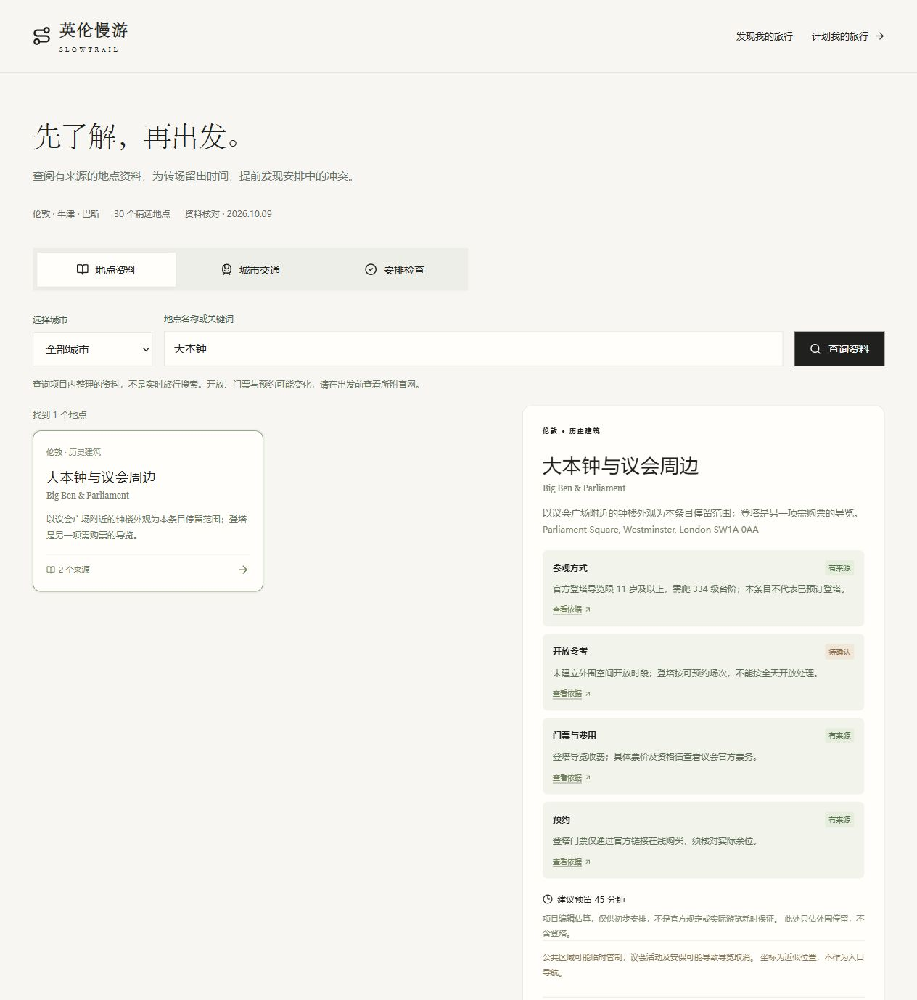
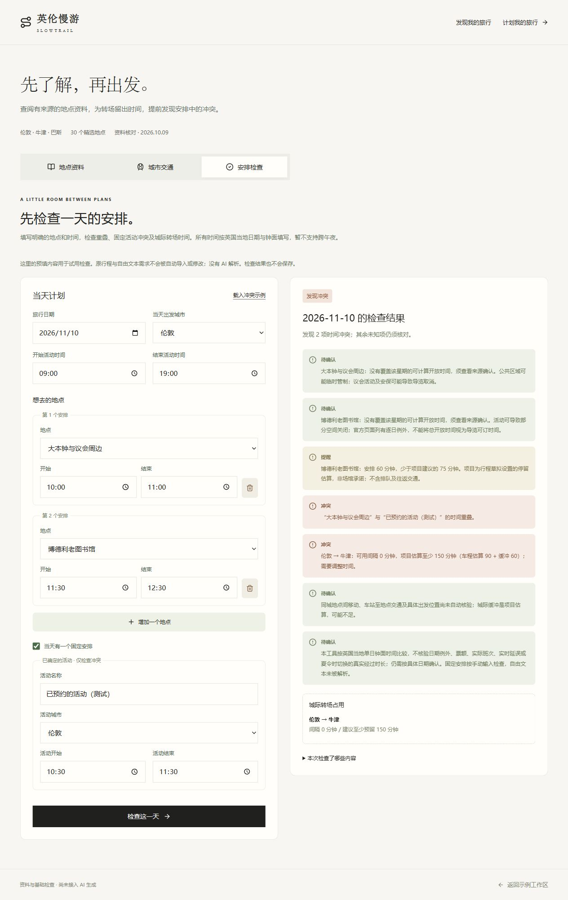

地点资料
三城各十个地点，保留来源、核对日期和未知字段。
来源可查
项目氛围封面 · 城市摄影，非产品截图英伦慢游 / Slowtrail
面向中文使用者的英国旅行产品原型。从地点故事出发，把偏好、日程和需要核对的资料放在一起。
从旅行的心情开始
用城市摄影开场，让“计划我的旅行”与“发现我的旅行”承接两种不同的起点。

成果 01 / 完整体验
把每天去哪里、先后顺序和地点位置一起呈现，减少在长文本与地图之间来回寻找。

看得见重点每日安排分组呈现，选中景点可对应地图位置。
细节按需展开故事、参观资料和调整便笺放在需要时出现的位置。
说明真实状态保留“示例”标识；调整入口记录意图，不假装已重排行程。
成果 02 / 旅行发现
伦敦、牛津与巴斯，各有两篇短故事。让“为什么想去”与“在哪里”相遇，再将喜欢的地点带入自己的规划需求。
六条故事、城市筛选与重点标记联动。近似位置用于理解景点分布，不作为导航。


成果 03 / 需求到安排
从城市、天数和节奏开始，留出表达必去地点与固定安排的位置。复杂偏好可以稍后展开。
已有目的地，或从故事带入一点灵感。
一起查看城市、日期、兴趣和特别安排。
逐日看清安排，需要时查来源或手动检查时间。
现阶段不会把自然语言自动编排为真实行程。

成果 04 / 有依据的旅行资料
整理真实资料快照，并把基础检查做成可以使用的功能。


三城各十个地点，保留来源、核对日期和未知字段。
来源可查官方耗时参考与项目预留时间分开说明，不暗示实时班次。
事实与估算分开查地点、看详情、查交通，并检查手填单日安排的冲突与缺口。
实际执行检查开放日期例外、余票、同城移动与实时交通尚未完整覆盖；坐标为近似位置，地图不提供导航保证。
我的工作 / 把想法推进到可用原型
聚焦三座城市与 3–7 天旅行，先连通发现、需求、确认与逐日浏览，再补充来源资料与时间检查。
用摄影与地点故事表达旅行态度；减少首页模块，统一字体，让地图服务于重点景点。
与 AI 编程助手协作，将需求变成可运行页面；按阶段查看成果、提出修改并记录已实现与待完成内容。
本人转述的同学与朋友非正式意见。未开展正式访谈统计，不代表量化使用效果。
可检查的交付
定位、范围、功能、异常处理与验收标准。
阅读 PRD 简历素材 / PDF以范围定义、体验决策和真实交付说明项目贡献。
查看简历项目内容 源代码包含页面、资料、检查工具、来源与阶段记录。
查看 GitHub 源码当前完成交互原型、来源资料查询和基础时间检查；行程仍为固定示例。模型自动规划、真实行程修改、锁定、撤销与保存恢复尚未接入。
最近一轮记录为24项单元测试及构建、类型和代码检查通过；这些属于工程检查，不是用户效果。页面截图用于展示当前界面，不等于全部视觉、手机和异常交互已经验收。